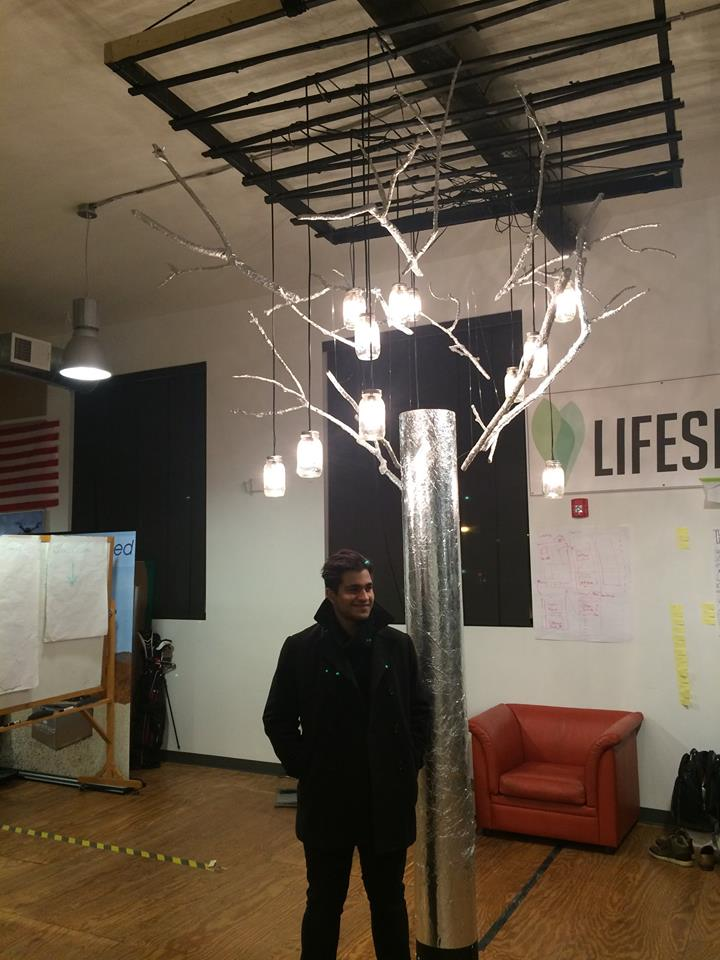
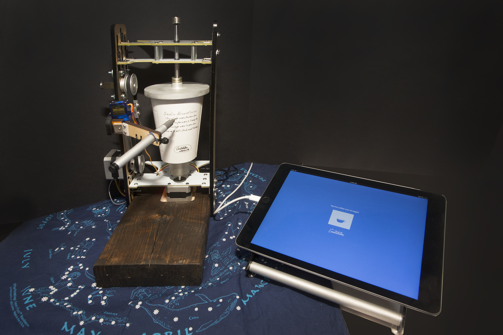

Tree of Light is a interactive touch sculpture that creates an emotional experience. A handmade touch sensor and audio and visual actuators create something that is more than the sum of it's technological parts. The project won the First Penguin award at the 2015 CMU Build18 hardware hackathon. From January-August 2015, the sculpture was installed at Alphalab Gear, a startup incubator in East Liberty, Pittsburgh.
Using Disney's touch and gesture sensing technology,Touche, the team built an abstracted model tree wrapped in tin foil that could detect and differentiate 0, 1, or 2 touches.
Based on those touch events, OSC messages were passed between Processing and a ChucK script to generate real time audio. The neutral state of the audio is a randomized melodic line. Chord tones would be layered over the melody when a touch was detected. Single touches are more likely to produce darker tonalities, while two touches would produce brighter tonalities to promote a feeling of cooperation. The chords were produced using a four voice "chorus" of unit generators.
Now, the lights live on as dancefloor lighting. MaxMSP listens to music, filters the audio, and sends serial messages to sync the lights to the beat. The incandescent bulbs give a unique effect.
Collaborators
Arun Marsten
Thomas Eliot
Hannah Tomio
Sebrand Warren
Sharina Lall
CMU 2016 BXA Music Tech & IS
CMU 2016 ECE
CMU 2017 ECE
CMU 2015 Design
CMU 2017 Bio
This was the first year participating in the competition for all team members.

Installation at Alphalab Gear
Destination Constellation
"A to-go coffee cup that tells you where to go"
For the Build18 hackathon, our team brought to life a pop up coffee shop concept in collaboration with Constellation Coffee. Destination Constellation creates a unique and branded experience for every customer. We took home the Sponsor's Choice Award and a $500 Innovation Award from Lockheed Martin.

At Destination Constellation, when customers order their pour over coffee, they give their name and answer a few personality questions in our store front app. While they wait, they watch our CNC robot draw a custom design onto their cup. The cup now contains directions and a map to a unique location in Pittsburgh, in the form of a constellation. The customer leaves with a unique artifact to remember their experience by and a place to journey with coffee in hand.
For this concept, we were inspired by the role that Constellation Coffee plays in the community. Constellation is nestled in-between many Pittsburgh neighborhoods, and has an important role as a gathering place to share culture, events and discoveries. The coffee cups represent the role of the coffee shop in the community. We also moved by the reluctance of many CMU students to explore beyond campus. Our team believes that Pittsburgh more to offer than they might realize.
CMU 2016 BXA Music Tech & IS
CMU 2016 ECE
CMU 2016 MechE
CMU 2015 BXA HCI & IS
CMU 2019 BXA Art & Biology
Barista at Constellation Coffee
Screaming Bagpipes
"A personal expression of school spirit"
There are two elements of CMU culture that unite every student on campus: stress and bagpipes. At the CMU Screaming Booth, students can scream out their frustrations about work and school. When they're finished the sound is converted into the famous bagpipe tune "Scotland the Brave".
The vocal samples are recorded and then pitch modulated using a Max patch